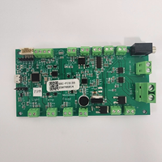

The FFSB (Firmware For Sensor Board) is an embedded solution developed using STM32 for controlling various components in a PIS program. It manages hardware such as LEDs, fans, sound messages, button messages, temperature sensors, noise sensors, door buttons, and power management for solar panels and battery systems to ensure stable operation. The FFSB communicates with a PC via COM port for real-time status updates and control commands.
The FFSB Sensor Board is a versatile system offering the following features:
The FFSB board is a core component of PIS infrastructure, enabling seamless hardware management for real-time information systems and ensuring reliable operation in environments with fluctuating power availability.
As a Software QA Engineer, I was responsible for testing the FFSB (Firmware For Sensor Board), ensuring that it performs reliably and efficiently. My role in testing involved comprehensive System Testing and Integration System Testing, focusing on the interaction between various components and their communication with the PC.
I performed system-level testing to verify that all components—such as LEDs, fans, sound messages, button messages, temperature sensors, door buttons, and the power management for solar panels and battery—functioned as intended. This involved:
During integration testing, I ensured the FFSB board's smooth communication with the PC via the COM interface. This involved:
The firmware, written in C, was designed with simplicity in mind to allow easy updates and improvements. My role involved:
Through my testing efforts, I ensured that the FFSB Sensor Board worked seamlessly within the system, providing reliable real-time updates and component control for the Public Information System, while ensuring stable power management through solar panel and battery control.